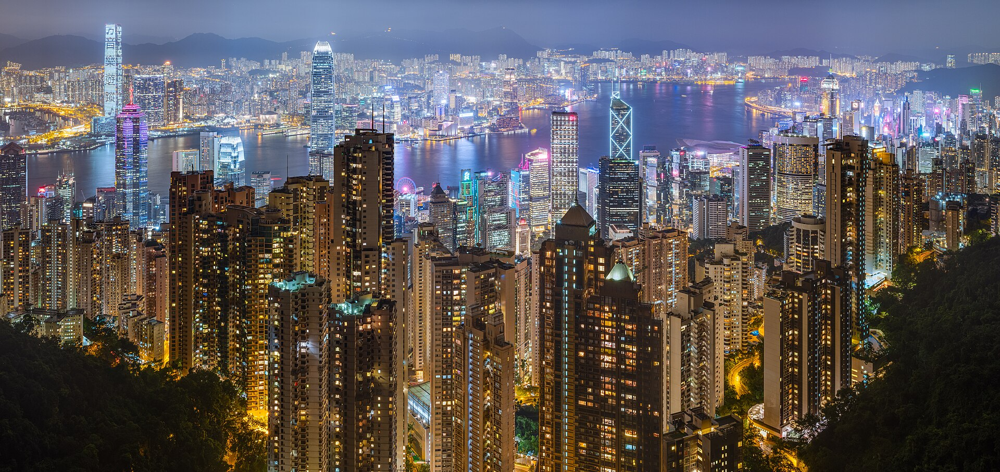
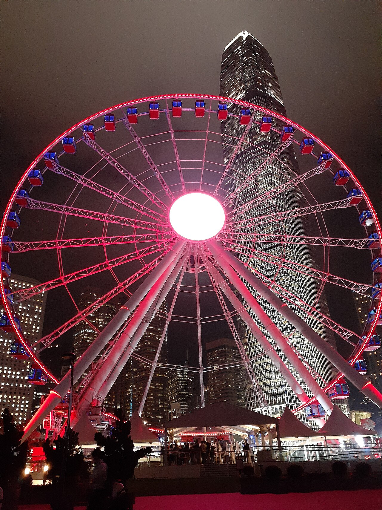
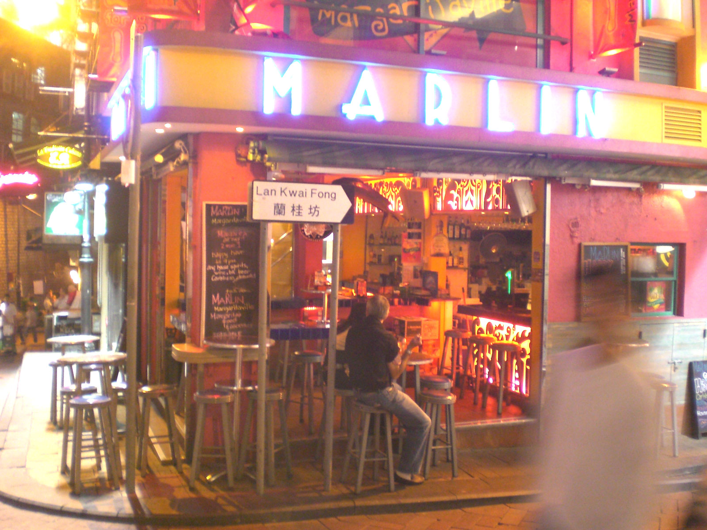
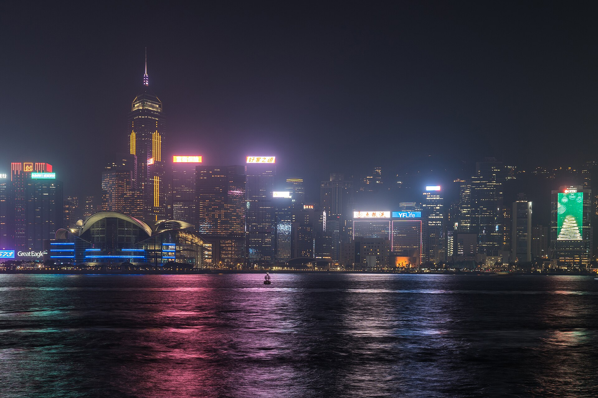
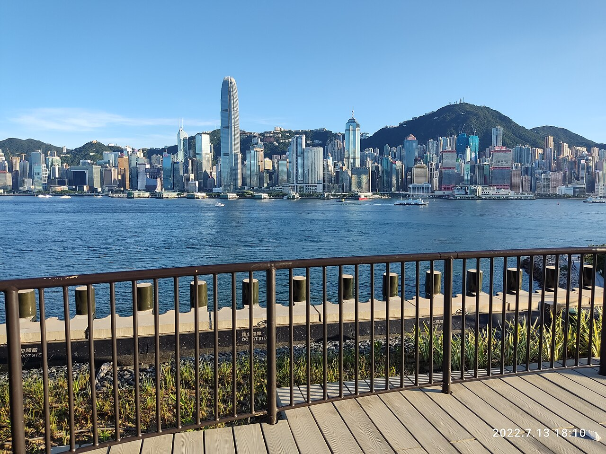

18:00
Harbour light
Start on the water. WinterFest and the New Year countdown are public and easier before the promenade fills.
After dark
Street markets, harbour light shows, and the late programme that keeps the city moving.
This page is about the hours after dark: where to stand, when to move, and which nights actually feel late. It is not a second copy of the diary.

18:00
Start on the water. WinterFest and the New Year countdown are public and easier before the promenade fills.

20:00
Clockenflap, a museum night, or a cultural performance. Pick one. A second paid event the same night usually means a rush across the harbour.

22:00
Lan Kwai Fong is the late table after a Central show. Tsim Sha Tsui is the easier walk if you were already on the promenade.
Central
Wine & Dine and Clockenflap use the Central harbourfront. Lan Kwai Fong is the walk-up nightlife after those shows.

Tsim Sha Tsui
The countdown, the Chinese New Year night parade, and the dragon boats all face Victoria Harbour from this side.

West Kowloon
Use the cultural district for an outdoor programme, then eat in Tsim Sha Tsui instead of crossing back to Central.
Photographs: Victoria Harbour from the Peak and from Tsim Sha Tsui, the Central waterfront, Lan Kwai Fong, and the West Kowloon waterfront. Wikimedia Commons.